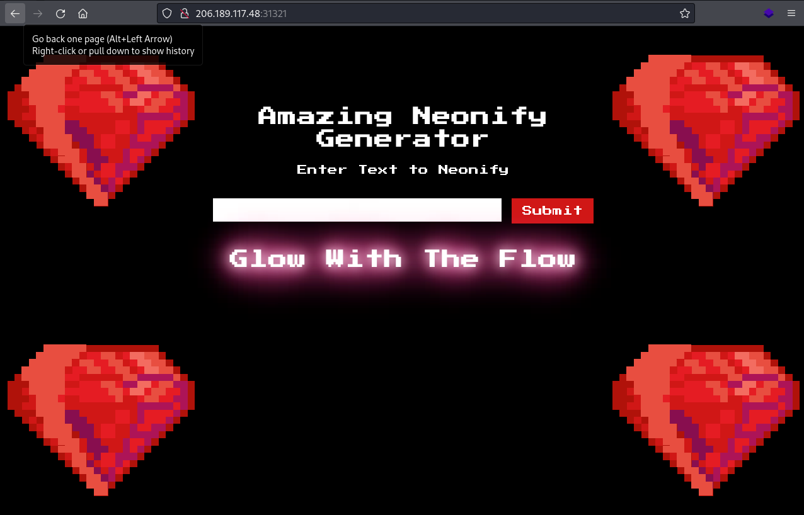

| site | Hack the Box |
| url | https://app.hackthebox.com/challenges/neonify |
| discussion | https://forum.hackthebox.com/t/official-neonify-discussion |
| type | challenge/web |
| difficulty | easy |
| startdate | 2022-08-07 |
| enddate | 2022-08-08 |
It's time for a shiny new reveal for the first-ever text neonifier. Come test out our brand new website and make any text glow like a lo-fi neon tube!
We receive an IP and port to a server and a zip file with the the Ruby application deployed on that server. In the browser, we are presented with a website that takes a string and displays it in a neon style:
Analyzing the source code, we find that the text provided by the user is checked using a regular expression. A web search for ruby regex insecure reveals an important difference in the Ruby regex syntax [1]:
Ruby's regular expression syntax has some minor differences when compared to other languages. In Ruby, the ^ and $ anchors do not refer to the beginning and end of the string, rather the beginning and end of a line.
This means that if you're using a regular expression like /^[a-z]+$/ to restrict a string to only letters, an attacker can bypass this check by passing a string containing a letter, then a newline, then any string of their choosing.
If you want to match the beginning and end of the entire string in Ruby, use the anchors \A and \z.
This is exactly how the check is done in this application:
post '/' do
if params[:neon] =~ /^[0-9a-z ]+$/i
@neon = ERB.new(params[:neon]).result(binding)
else
@neon = "Malicious Input Detected"
end
erb :'index'
end
Therefore, we need a way to submit a string containing a new line character to the web app. After some research, our payload string is:
a <%= `cat flag.txt` %>
The first line serves only to fulfill the regex check. The second line contains the payload and is composed as follows:
<%= %>.`) are executed by Ruby as shell commands.It is not possible to submit this string directly in the application's frontend, so we use curl. A web search tells us how to send a HTTP POST request using curl [2]. In doing this, it is important to URL enocode the payload string; this is done using a free encoder web app [3].
The finished command is entered as follows. $PREFIX, $COMMAND, $IP, and $PORT are temporary shell variables for easier trial-and-error:
The flag is therefore:
HTB{r3pl4c3m3n7_s3cur1ty}